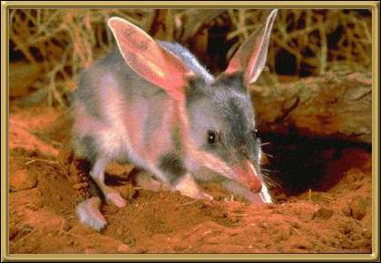

These gorgeous little animals are an endangered species, but nonetheless growing in popularity in Australia. These days instead of buying Easter Bunnies, people buy Easter Bilby's! Bilby's don't drink water, getting enough from the food they eat. They sleep by day in deep burrows and forage at night. Found mostly throughout the arid, dry areas of Australia.
Photographer: Unknown